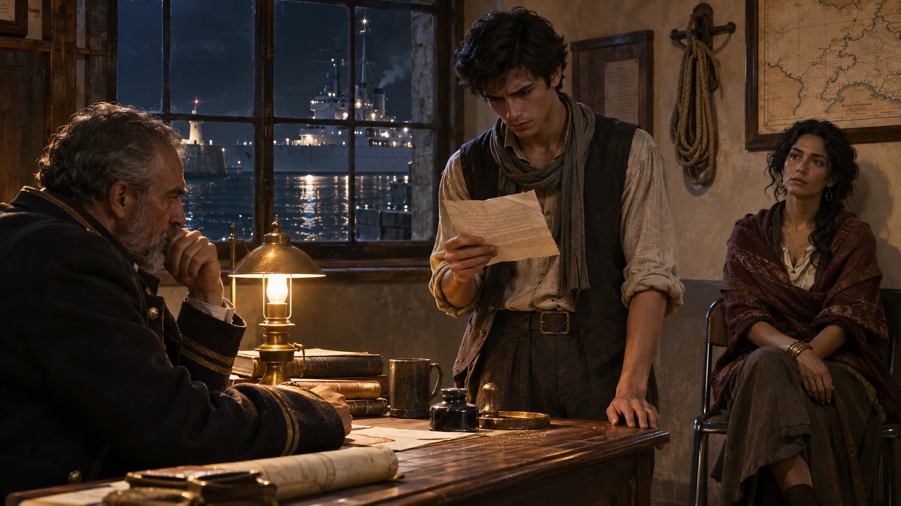

01 · Two Words and Three More
Council hall, Calder harbour · twenty-five hours before the deadline, 22:40
The harbourmaster of Calder had written his answer on the back of a tide table, and it was two words long.
Quillan Abara laid it in front of Bram Ivarsson. Bram was nineteen. He had interpreted for fishwives and customs clerks, and never for anyone with a gun. Illuminara sat on a stacking chair against the wall, where the council had put her because nobody could say what else she was. Through the window the cruiser Marin Resolute lay across the harbour mouth like a shut door, every deck light burning.

QuillanRead it.
BramNo. We will not hand over the Tamsin Reach.
QuillanThat is my answer, and it is the right one. Now hear what you will say at the table.
He took the tide table back and wrote three more words under the first two, pressing hard enough to dent the paper.
QuillanWe are considering it. A captain who hears considering waits. A captain who hears no fires. Captain Vey has told us how he hears things, and I would rather not be heard.
BramHe said a maybe would be taken as a yes.
QuillanThen I will have a night before anyone finds out it was not. Sixty thousand people need a night, boy. You carry what you are given. That is the whole of the work.
Bram looked at the two words and the three. He had a good memory for what people said, and it was the only thing he was sure he was good at. If I carry the three, I have put a lie in my own mouth and called it a favour.
BramI'll carry the no, Harbourmaster. I don't know that I can carry the other.
Quillan did not answer. He turned to the window and stood with his hands behind him, like a man waiting on a sentence he had already served. Illuminara said nothing. She had no standing in that room, and she had come to think the kindest thing she could be was a chair that did not lean.
02 · What the Captain Would Hear
Customs shed, Calder quay · 23:30
Captain Anselm Vey had the stillness of a man who had not slept for two days and did not intend to mention it. He came ashore in the cruiser's launch with one aide, who wrote and never spoke, and he sat across the customs table with his cap squared in front of him.
VeyHarbourmaster. You have had the evening. What is your answer?
Quillan spoke in Harbourish, four short words. Bram turned to the captain. His voice came out smaller than he wanted, and he let it.
BramThe harbourmaster says no. We will not hand over the ship.
The aide's pen stopped. Vey looked at Bram for a long moment, and Illuminara, from her chair by the door, saw the captain take in that the young man had not said considering.
VeyThen I will tell you how I hear that. At midnight tomorrow my guns open on this quay. Nothing said after tonight reaches anyone who can stop them.
Bram rendered it. Quillan's jaw moved. Bram felt the room tilt toward the one thing he had not been told he could do, and asked for water. In the corridor he leaned on the wall, and Illuminara came out and stood at a distance he could close or not.
BramI did it right. I said it exactly, and he will fire. I made it worse.
IlluminaraWhat did he say he would do? Not what you heard. What he said.
BramAt midnight tomorrow he opens fire. Nothing said after tonight reaches anyone who can stop it.
IlluminaraThat is a date and a fear. It does not say what would change it. What would you want to know, if it were you who had to carry it back to a command?
He stared at her. Then, slowly, something in his face stopped bracing and started working.
BramI'm allowed to read back. Everything I think I heard, before I answer. Nobody has ever asked me to use it on a captain.
IlluminaraI won't tell you what to ask. I'll be here.
When he came back in, he did not sit. He said it in Marin first, then in Harbourish, slowly, so that both men heard what he had understood.
BramCaptain, I will say back what I heard, and you will tell me where I am wrong. At midnight tomorrow you fire. I understood that you fire unless a yes is given. Is that what you mean, or do you mean unless something is given that you can report?
Vey said nothing for several breaths. His aide had begun to write again.
VeyNot a yes. I do not need your ship. My command was told there are weapons aboard it and one man they want. I am ordered to fire unless I hold an answer to that claim that I can verify. A yes is verifiable. A maybe is not. A no with nothing behind it is not either.
BramThat is two claims, Captain, and the harbourmaster will answer them separately. Weapons, and a man. What is the claim about the man?
VeyA warrant from the Eastern court of the Concord. Teodor Lask, accused of burning a grain store at Orrin Ford. I have no evidence beyond the paper. I do not know that he is aboard. My command says he is. I am not a court, and I am not asking you to be one.
BramThen what would you accept as an answer about him?
VeyThat someone who answers to no navy looked, and wrote what he found, and that I can sign my name under what he wrote. I cannot sign under a refusal.
Bram rendered all of it to Quillan, every word, and watched the harbourmaster hear for the first time what the door was made of.
BramHarbourmaster, the captain can live with a no if it comes with a way to answer his claim. I cannot offer one. An interpreter does not add.
QuillanI will not have Concord boots on a refugee deck. And I will not hand over a man on a captain's paper.
BramThat is two refusals. I do not yet know what else is yours to open.
QuillanNot at the table. Not under guns. I will answer at four.
Vey allowed it. His aide drew a line under the page.
03 · What the Ship Would Allow
Quay, beside the Tamsin Reach · 01:20
The ship was a coastal packet built for ninety and carrying two hundred and twelve. Sefa Harrow, a retired schoolteacher with a blanket over her shoulders and a clipboard she no longer needed, met Illuminara at the foot of the gangway and did not offer her a hand.
SefaEverybody wants to speak for us tonight. The harbourmaster, the captain, the radio. You are the first person to come down here and ask.
IlluminaraI haven't asked yet. I came to ask what you would never allow. Then what you could.
SefaNames. A list of two hundred and twelve names in a Concord office is two hundred and twelve people they can find. Not one name leaves this ship.
IlluminaraThen no names. What else?
SefaForty-one of mine are sick. Some have been sick for a week. Whatever anyone wants to see in my hold, let them see the sick walk off first.
A child coughed somewhere above them, a hard wet cough. Sefa waited until it had passed.
SefaAnd you should hear this from me before you hear it from a captain. There are two crates of hunting rifles in the hold. Two families brought them from the coast out of habit. He is not wholly wrong, and I will not lie to anyone you send.
IlluminaraThen you say it yourself, to whoever looks. I will not tell it for you. There is one more thing in his claim, and it is not cargo. A man. Do you want the name, or only that there is one?
SefaSay it. Hearing is not giving.
IlluminaraTeodor Lask. A warrant from the Eastern court, for burning a grain store at Orrin Ford. The captain says he does not know whether the man is aboard.
Sefa's face did not change. Somewhere above them a cough stopped, or a breath did. Illuminara could not have said which, and did not look up.
SefaI will not tell you whether I know that name. If I say no, I owe a captain the proof of a no. If I say yes, I have handed him a man because a navy put a paper in front of me. Neither answer leaves this ship.
IlluminaraThen what can?
SefaA vote cannot give away a person. It can only decide how he is asked. So: someone who answers to no navy puts one question to every adult aboard, alone. Are you the man in this paper? Each answers for themselves and nobody for anyone else. It is written down, sealed and kept by that neutral until a hearing on land, with counsel for whoever stands in it. The captain may have the fact that the question was asked of all of us. He may not have an answer.
IlluminaraI will carry exactly that, and nothing beside it.
SefaWe vote at three. By hand, in the hold, every one of us over twelve. I will tell you at four what the ship says.
At ten to four she came to the gangway alone. The ship had voted. The rifles would be sealed and held by a neutral inspector until the harbour was safe. The sick would go first. The question would be put to every adult alone, and no answer would leave the ship. No name would leave the ship. One man had voted against and was not speaking to anyone, and Sefa said so without apology.
04 · Say It Aloud
Council hall, Calder harbour · 04:20
Quillan was still in his coat. Bram had brought tea and put it down without being thanked, and then he did something that cost him: he did not sit.
BramHarbourmaster, I will carry your no at eight exactly as you gave it. I won't say considering. If you order it, I will tell you now that I won't, and you can send for someone else.
QuillanYou are nineteen.
BramYes. The captain fires at midnight on a no with nothing in it. I will not be the mouth that says you were thinking when you were not. Tell me what is yours to open. Say each thing aloud, and I will say it back to you, and then I will carry exactly that and nothing more.
Illuminara stood by the door. Sefa had asked her to carry the ship's four conditions to him, and she had done so in the hall at four, word for word. She added nothing now.
QuillanA neutral inspector. Not Concord's man. Tomas Brightwater of the Lantern Mission has waited in the town since the first day.
BramA neutral inspector, Brightwater of the Lantern Mission, not a Concord officer. Is that yours to give?
QuillanIt is. The sick, first, at nine, onto my quay, into my ambulances. And if the guns move back, a talk at dawn the day after.
BramThe sick landed at nine, by your ambulances. If the guns move back, a talk at dawn the day after. Is that yours to give?
QuillanIt is. And the ship's fourth condition, the question put to each adult alone. My harbour allows Brightwater to ask it, on my quay and in their hold. The answers are theirs. I will not be heard promising a navy what is not mine to promise.
BramThe harbour allows the question to be asked. The answers belong to the ship. Is that what you give?
QuillanThat is exactly what I give. And hear this, because I will not have it said later that I chose it gladly. I am doing this because a boy would not lie for me.
BramI'll render that as well, if you wish.
QuillanNo. That is for me.
05 · Read Back
Customs shed, Calder quay · 08:00
Bram stood between the two men and rendered the answer in the order he had been given it. First the no, in the harbourmaster's own words. Then the doors, each one followed by the plain question: Have I understood?
Vey had Bram read the inspector's terms back to him twice. He asked for one change, and Quillan refused it, and Bram carried the refusal exactly, and the captain looked at the table and nodded as at a coin that rang true.
VeyBrightwater reports to me in writing, signed, and a Concord observer stands on the quay and not on the deck. That much I need for my command.
BramThe harbourmaster says the inspector signs, the observer stays on the quay.
QuillanSay that I was never asked whether my harbour wished to be inspected, and that I resent it.
BramThe harbourmaster says he was never asked whether his harbour wished to be inspected. He resents it. He agrees.
Then Bram read out the ship's conditions as Sefa had asked them to be carried: no names, the sick first, the rifles sealed, the question put to each adult alone. He read them in the order she had spoken them, with the sentence she had added about the vote.
VeyRifles. Then I was told the truth.
BramThe ship's spokeswoman said the same, before anyone asked. She said she would not lie to whoever looked.
BramNow the man, Captain. Your paper names Teodor Lask. The ship's answer is this. Brightwater asks every adult aboard, alone, whether they are the man. Each answers for themselves. The answers are written, sealed and held by Brightwater for a hearing on land with counsel. You receive the fact that everyone was asked, and by whom. You do not receive an answer or a name. Have I understood, and can you sign under that?
Vey was quiet long enough that the aide looked up.
VeyIt is not what I was told to bring. I was told to bring a man or a yes. I will not call this a finding. Nobody has told me whether Lask is aboard, and a sealed paper will not tell me either. What I can sign is narrower: that the claim was put to every adult through a neutral, that no ground for custody was established on this quay, and that the allegation is unproved and goes to a hearing with counsel. A refusal I could not sign beneath. That I can.
BramYou will sign that the question was put to every adult, that the answers are sealed, that you hold no name, and that the allegation is unproved, not answered.
VeyUnproved. Not disproved. Write it so, because my command will read it both ways. Now my side, and I will say it so your harbourmaster hears it from me and not from a rumour. Two things move me. When the observer on the quay sees the last of the sick landed, and Brightwater sends word in his own hand that he is aboard and the question is being put without obstruction, I go to six kilometres and hold fire. That is mine to do as the officer on station, and it can be undone. If his signed report is not on this table by six this evening, or it says what the observer did not see, I am back at a kilometre and a half by dusk, and I will not send word first.
QuillanAsk him what six kilometres does for my harbour. I will tell my council what I am given, not what I hope.
BramThe harbourmaster asks what six kilometres changes for the harbour.
VeyIt opens your harbour mouth. Your pilot boats and your ambulances move without a gun laid on them. My guns still reach this quay from there, and I will not say otherwise. What changes is that I cannot come back to a kilometre and a half unseen. You would watch me close, and that is minutes, not seconds. A harbour can do a great deal with minutes.
QuillanIt is enough.
Vey turned his cap a quarter turn on the table. When he spoke again his voice had changed, and the aide did not write what he said.
VeyI was sent to collect a handover. This is a better answer than that one, and my command may not think so. Six kilometres. Not away.
Vey stood. At the door he looked at Illuminara for the first time, a man identifying a piece of equipment he had been told nothing about.
VeyAnd who are you?
BramShe is the one who sat behind me.
06 · The Hour After Midnight
Calder quay · 09:10, and 23:50
The first stretcher came down the gangway at ten past nine, and the cruiser's rail was lined with men with glasses. The sick went into the ambulances in the order Sefa had set, children first, then the old, then the ones who had walked off on their own and sat down on the cobbles because nobody had told them where to go. Brightwater went up the gangway with a notebook. A Concord observer stood on the quay and watched him do it.
At twenty past eleven the last of the forty-one was in an ambulance, and the observer raised a flag to the cruiser. At ten to twelve a launch brought Brightwater's pencilled note: aboard, rifles sealed and receipted, the question begun in the hold and being put without obstruction. Vey read both on the bridge and logged them. At two in the afternoon the Marin Resolute backed out of the harbour mouth and turned side-on, six kilometres out, a grey shape on a grey sea. The harbour mouth lay open for the first time since the blockade began, and a pilot boat went out through it before the cruiser had finished turning. Everyone on the quay knew the guns could still reach them, and nobody pretended otherwise.
Brightwater's signed report reached the customs shed at six. Two crates, sealed, receipts for each. The question put to every adult aboard, each answer or refusal sealed in a case he kept, to be opened at the hearing with counsel or not at all. On the claim about the man he wrote one line, and Vey signed under it: unproved, process followed, no ground for custody established on the quay. Nothing given to Concord. No name recorded. At six the cruiser stayed where it was.
Quillan called Bram to the council hall at eleven. He did not ask him to sit.
QuillanYou carried my no as I gave it. You will not be in my delegation again. I cannot have it said that the harbour's mouth does what it likes.
BramYes, Harbourmaster.
Quillan nodded once, and Bram understood that it was the whole of what was going to be said.
At ten to midnight Bram sat on a bollard at the end of the quay with his coat over his knees. The cruiser's lights burned far out. Illuminara came and sat on the stone beside him, and neither of them spoke while the second hand of the harbour clock crept toward the top of the hour. It passed. Nothing opened fire. A gull moved on a roof.
BramHe didn't fire.
IlluminaraNo.
BramI'm out of a job.
IlluminaraYou're out of a delegation. Sefa came to the quay at six and asked for you by name. She says the ship has a great deal left to say and nobody on it who can say it to Concord.
Bram looked at the lights six kilometres out, a small steady constellation that would be there in the morning. He did not say anything for a long time. Then he reached down and picked up his satchel and checked, as if it had changed, that his notebook was still inside.
BramTell her I'll be at the gangway at eight.
IlluminaraTell her yourself. She's still awake.